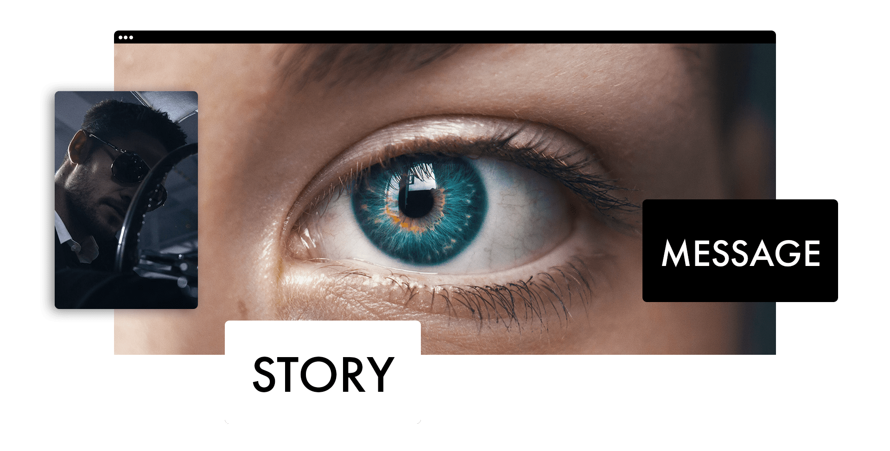
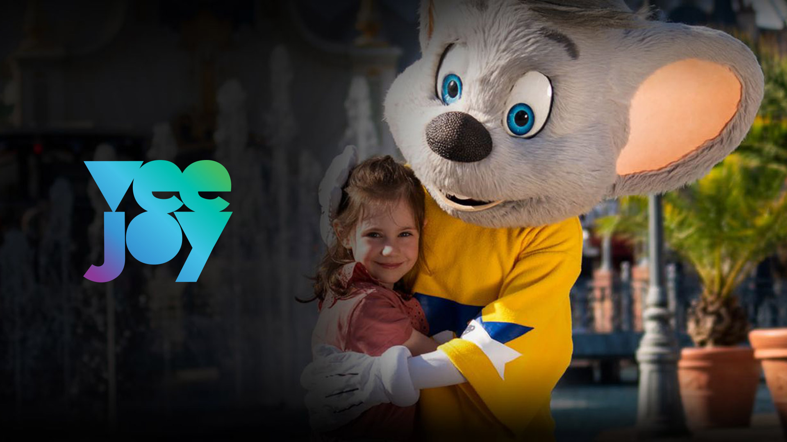

Film & Campaign
- Werbefilm und Produktfilm
- Commercials, Trailer und Social Cuts
- Regie, Produktion und Postproduktion
- Entertainment, Industrie und Healthcare
Regie · Filmproduktion
Fotografie · Art Direction
Preisgekrönter Regisseur, Fotograf und Creative Film-Producer aus Freiburg/Basel.
Andreas Boehler Studio verbindet Regie, Filmproduktion, Fotografie, Art Direction und KI-gestützte Workflows zu Bildern, die klar geführt, emotional erzählt und technisch sauber umgesetzt sind.


Ein futuristischer Tourtrailer zwischen Show, Abenteuerkino, VFX und KI-gestützter Postproduktion.

Emotionale Markenkommunikation für eine der stärksten Entertainment-Marken Europas.
Digitale Prozesse, klare Informationsarchitektur und visuelle Übersetzung komplexer Inhalte.

Eine überzeichnete Werbeidee mit starkem Motiv, Comedy-Timing und sofort erkennbarem Look.
Mehr als zehn Jahre zwischen Agentur, Entertainment, Healthcare, Design, Kamera und Postproduktion. Der Prozess bleibt schlank: verstehen, Look bauen, sauber ausführen.
Profil & Awards ansehenDer erste Schritt darf klein sein: Ziel, Timing, grober Rahmen und ein paar Referenzen reichen, um die richtige Richtung zu finden.
Projekt starten